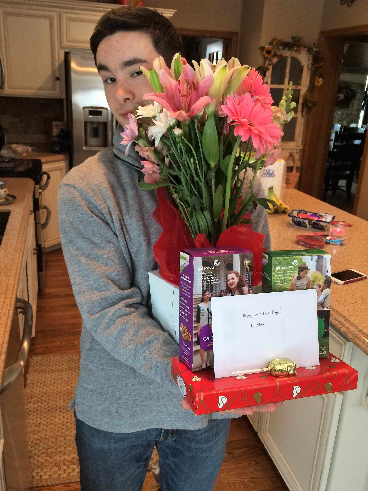
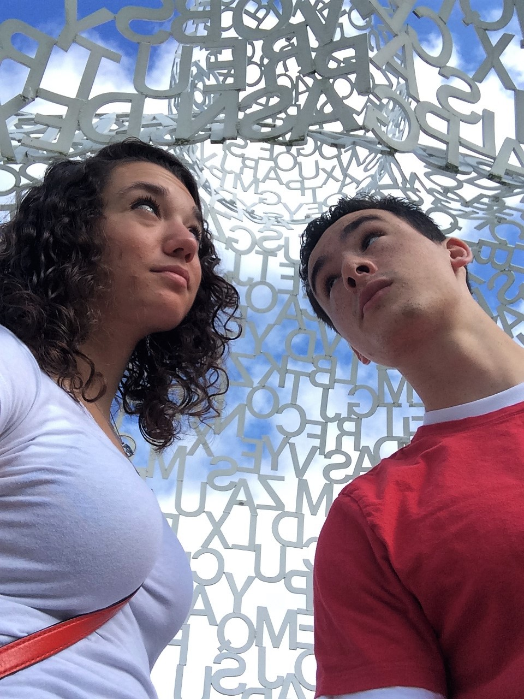
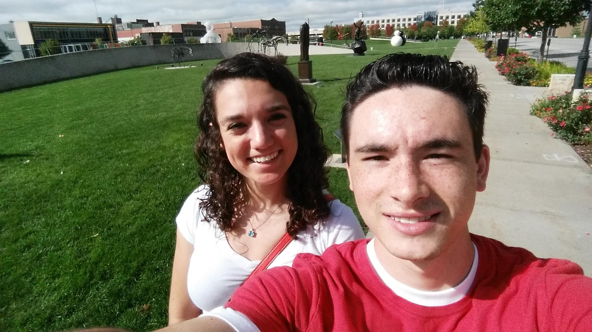
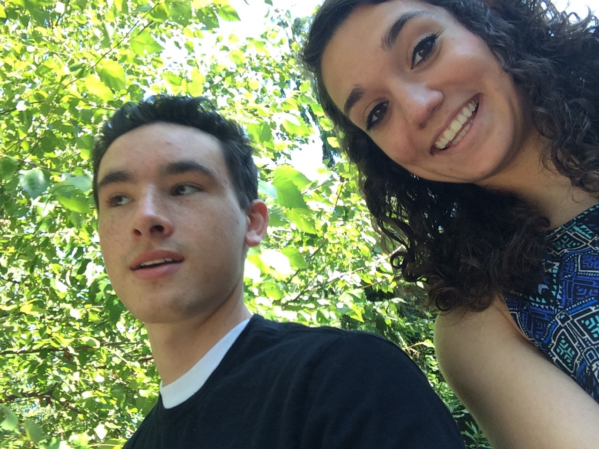
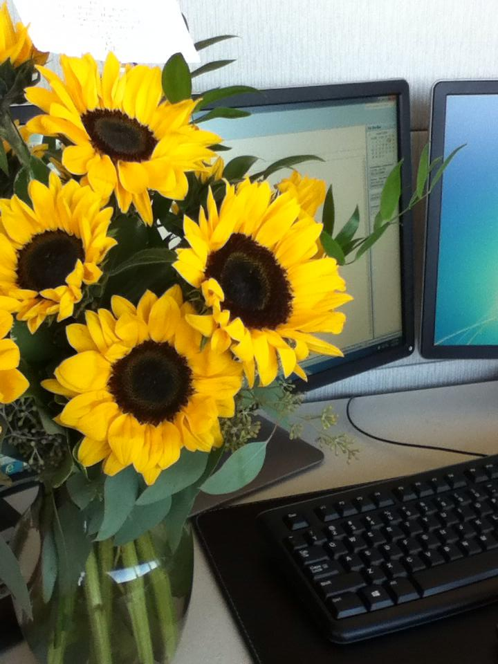
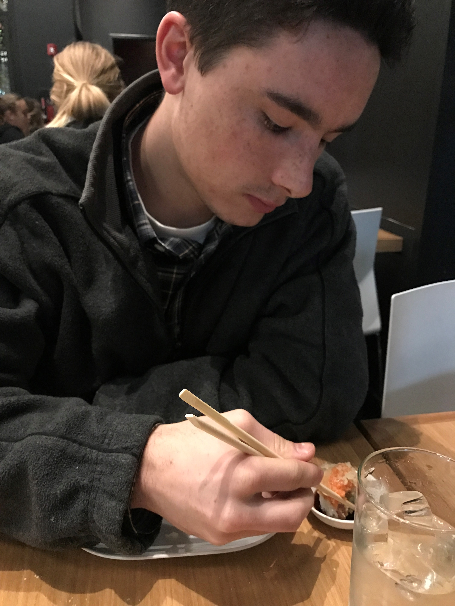
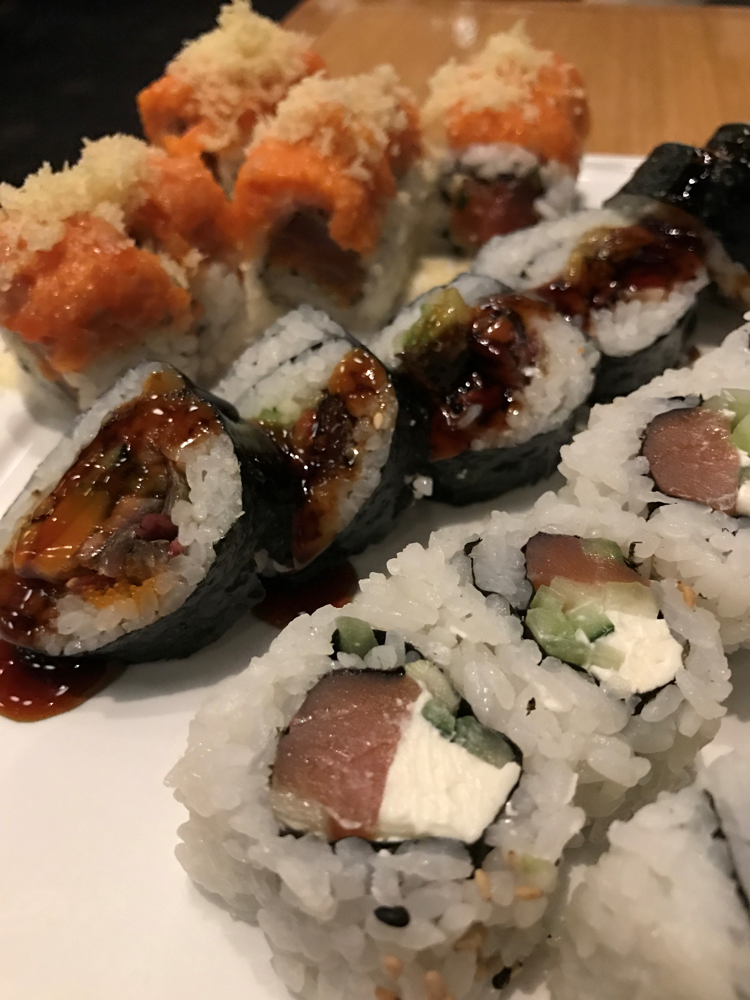

I think these picture just show how much fun we can have :)
Testing of the Drone
Remember when you didn't even want this drone? Well, I think you have grown to love it. I'm glad I could experience it with you. You're very talented not only at taking some great footage, but also compiling wonderful videos. It really makes me proud.
Ice Skating
I know you don't get out on the ice often, or really love it. Maybe that's because of your feet or your skills.. I'm not sure. JK! However, I'm really glad we got to go this once. I won't forget it. Let me know if you want to go again!
Valentine's Day

Those girlscout cookies look really good. Always love another V-Day with you.
Fishing at Lake 5
This was definitley a fun day! We got our trout tags and went fishing. Of course you caught most of the fish. The one I did catch had eggs and they spilled out everywhere - something so gross I think I will be scarred for life.
Some of my Favorite Picutres
PapaJohn Sculpture Park


Once again, we explored Des Moines. This time, we took some really cool photos of the PapaJohn Sculpture Park. I know we aren't really into artwork, but it was still a wonderful afternoon.
Des Moines Capitol Building
These are also some of my favorite photos, and favorite times. The capitol building is beautiful of itself. I was amazed at how gold it looked. We took a photo with your self timer and great angles. I love going back here with you.
We like Ice Cream?
We ate Culver's many times, but I know we won't be going back there soon. Also, you got Coldstone Groupons and we bought this huge brownie sundae to "share" with a couple waters. It was too much for me!
Blank Park Zoo

Nothing can compare to Omaha's Henry Doorly, but with your military discount this trip was all worth it.
Someone got their Wings
I had to live 3 weeks without contact from you :O. It wasn't bad at first, but then the letters took forever to send!! I loved getting every single one though. I'm so glad you never have to go through that again. I'm also very proud of you :)
Drone in Des Moines
Farmer's Market
I'm so glad we got to go to the HUGE Farmer's Market in downtown Des Moines. We went multiple times - mostly to get the delicious Kettle Corn. I nibbled on a little bit of that every day. Thanks for sharing :)
BEST. FLOWERS. EVER.

I couldn't explain to anyone how much these flowers mean to me. All summer, I had been working at Athene. At the end of the summer, each intern gives a final presentation. The night before, I tried on certain outfits for you. You really like the yellow one, and told me "Yellow matches a lot of things - like the sun!" I was highly confused and just went with it. Sure, tomorrow, during my presentation, I would match the sun. Well, that afternoon, you left town, and I gave my presentation. Soon after, the security desk had emailed me saying I had a package. What do you know, Jeffrey sent me these beautiful sunflowers. They were my favorite things and I can't help but get the butterflies whenever I look back on it. That is all I really wanted when I grew up - for someone to send me flowers at work. Dreams come true ;)
Sushi on the Bday
You bought a Groupon for my birthday and we went to Hiro88. We couldn't partake in the happy hour specials, but we for sure got the perfect amount of sushi, while I celebrated my 21st with a Pineapple Mimosa. Because it was so close to my birthday, I got some free chocolate cake out of the deal :) Thanks for dinner!

